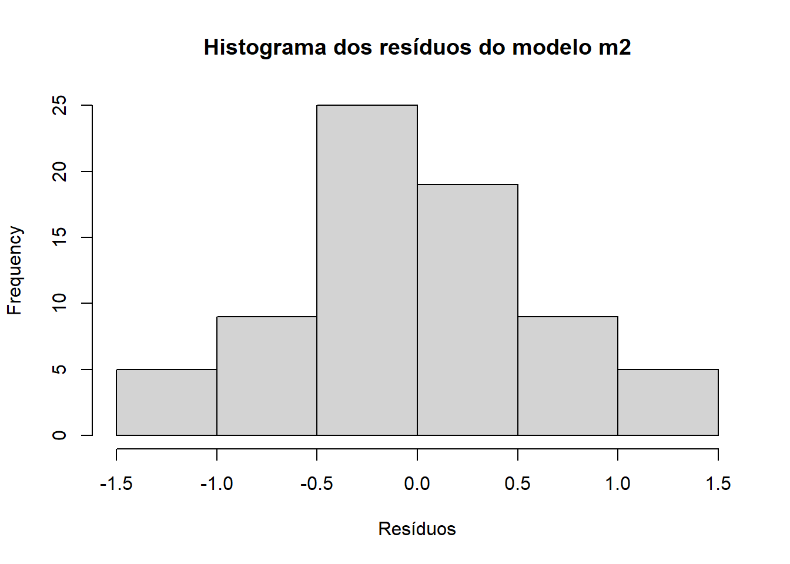
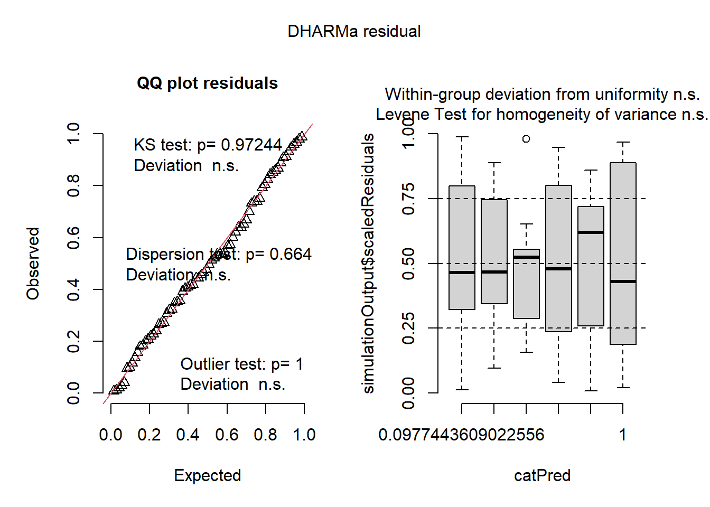

Aula 5 — ANOVA, Diagnóstico de Pressupostos, Kruskal-Wallis e GLM de Poisson
1 Apresentação
Esta apostila organiza, comenta e expande o exemplo da base InsectSprays, com foco em comparação de médias para dados de contagem. O objetivo é mostrar, de forma sequencial, como:
explorar os dados;
ajustar uma ANOVA de um fator;
verificar pressupostos do modelo;
considerar alternativas quando os pressupostos não são bem atendidos;
realizar comparações múltiplas;
ajustar um modelo linear generalizado para contagens.
Ao longo do texto, as fórmulas estatísticas são apresentadas para conectar a prática computacional aos fundamentos inferenciais.
2 Carregamento dos dados
Usaremos a base InsectSprays, já disponível no R. Ela registra a contagem de insetos sobreviventes (count) em parcelas tratadas com diferentes pulverizações (spray).
Mostrar código
library(tidyverse)
── Attaching core tidyverse packages ──────────────────────── tidyverse 2.0.0 ──
✔ dplyr 1.2.0 ✔ readr 2.2.0
✔ forcats 1.0.1 ✔ stringr 1.6.0
✔ ggplot2 4.0.2 ✔ tibble 3.3.1
✔ lubridate 1.9.5 ✔ tidyr 1.3.2
✔ purrr 1.2.1
── Conflicts ────────────────────────────────────────── tidyverse_conflicts() ──
✖ dplyr::filter() masks stats::filter()
✖ dplyr::lag() masks stats::lag()
ℹ Use the conflicted package (<http://conflicted.r-lib.org/>) to force all conflicts to become errors
Mostrar código
insetos <- InsectSpraysglimpse(insetos)
Rows: 72
Columns: 2
$ count <dbl> 10, 7, 20, 14, 14, 12, 10, 23, 17, 20, 14, 13, 11, 17, 21, 11, 1…
$ spray <fct> A, A, A, A, A, A, A, A, A, A, A, A, B, B, B, B, B, B, B, B, B, B…
Mostrar código
head(insetos)
count spray
1 10 A
2 7 A
3 20 A
4 14 A
5 14 A
6 12 A
3 Exploração inicial dos dados
Antes de ajustar qualquer modelo, é importante visualizar a distribuição das respostas em cada tratamento. Isso permite observar diferenças aparentes entre grupos, dispersão, assimetria e possíveis valores extremos.
Call:
lm(formula = count ~ spray, data = insetos)
Residuals:
Min 1Q Median 3Q Max
-8.333 -1.958 -0.500 1.667 9.333
Coefficients:
Estimate Std. Error t value Pr(>|t|)
(Intercept) 14.5000 1.1322 12.807 < 2e-16 ***
sprayB 0.8333 1.6011 0.520 0.604
sprayC -12.4167 1.6011 -7.755 7.27e-11 ***
sprayD -9.5833 1.6011 -5.985 9.82e-08 ***
sprayE -11.0000 1.6011 -6.870 2.75e-09 ***
sprayF 2.1667 1.6011 1.353 0.181
---
Signif. codes: 0 '***' 0.001 '**' 0.01 '*' 0.05 '.' 0.1 ' ' 1
Residual standard error: 3.922 on 66 degrees of freedom
Multiple R-squared: 0.7244, Adjusted R-squared: 0.7036
F-statistic: 34.7 on 5 and 66 DF, p-value: < 2.2e-16
Mostrar código
anova(m1)
Analysis of Variance Table
Response: count
Df Sum Sq Mean Sq F value Pr(>F)
spray 5 2668.8 533.77 34.702 < 2.2e-16 ***
Residuals 66 1015.2 15.38
---
Signif. codes: 0 '***' 0.001 '**' 0.01 '*' 0.05 '.' 0.1 ' ' 1
5 Diagnóstico dos pressupostos
A interpretação da ANOVA depende da avaliação dos resíduos do modelo. Em termos práticos, queremos verificar se os resíduos apresentam distribuição aproximadamente normal e variância aproximadamente constante entre tratamentos.
5.1 Resíduos do modelo
Os resíduos são calculados como:
\[
e_{ij} = y_{ij} - \hat{y}_{ij}
\]
onde \(y_{ij}\) é o valor observado e \(\hat{y}_{ij}\) é o valor ajustado pelo modelo.
5.2 Histograma dos resíduos
Mostrar código
hist(m1$residuals,main ="Histograma dos resíduos do modelo m1",xlab ="Resíduos")
O pacote DHARMa oferece uma visualização bastante útil do comportamento dos resíduos simulados.
Mostrar código
library(DHARMa)
This is DHARMa 0.4.7. For overview type '?DHARMa'. For recent changes, type news(package = 'DHARMa')
Mostrar código
plot(simulateResiduals(m1))
6 Alternativa não paramétrica: teste de Kruskal-Wallis
Quando os pressupostos da ANOVA não são adequadamente atendidos, uma alternativa é o teste de Kruskal-Wallis. Esse teste compara grupos com base nos postos, e não nas médias originais.
A hipótese nula continua sendo a de ausência de diferença sistemática entre os grupos.
Mostrar código
kruskal.test(count ~ spray, data = insetos)
Kruskal-Wallis rank sum test
data: count by spray
Kruskal-Wallis chi-squared = 54.691, df = 5, p-value = 1.511e-10
Também podemos usar uma função que já fornece agrupamentos de comparação.
count spray count_sqrt
1 10 A 3.162278
2 7 A 2.645751
3 20 A 4.472136
4 14 A 3.741657
5 14 A 3.741657
6 12 A 3.464102
7 10 A 3.162278
8 23 A 4.795832
9 17 A 4.123106
10 20 A 4.472136
11 14 A 3.741657
12 13 A 3.605551
13 11 B 3.316625
14 17 B 4.123106
15 21 B 4.582576
16 11 B 3.316625
17 16 B 4.000000
18 14 B 3.741657
19 17 B 4.123106
20 17 B 4.123106
21 19 B 4.358899
22 21 B 4.582576
23 7 B 2.645751
24 13 B 3.605551
25 0 C 0.000000
26 1 C 1.000000
27 7 C 2.645751
28 2 C 1.414214
29 3 C 1.732051
30 1 C 1.000000
31 2 C 1.414214
32 1 C 1.000000
33 3 C 1.732051
34 0 C 0.000000
35 1 C 1.000000
36 4 C 2.000000
37 3 D 1.732051
38 5 D 2.236068
39 12 D 3.464102
40 6 D 2.449490
41 4 D 2.000000
42 3 D 1.732051
43 5 D 2.236068
44 5 D 2.236068
45 5 D 2.236068
46 5 D 2.236068
47 2 D 1.414214
48 4 D 2.000000
49 3 E 1.732051
50 5 E 2.236068
51 3 E 1.732051
52 5 E 2.236068
53 3 E 1.732051
54 6 E 2.449490
55 1 E 1.000000
56 1 E 1.000000
57 3 E 1.732051
58 2 E 1.414214
59 6 E 2.449490
60 4 E 2.000000
61 11 F 3.316625
62 9 F 3.000000
63 15 F 3.872983
64 22 F 4.690416
65 15 F 3.872983
66 16 F 4.000000
67 13 F 3.605551
68 10 F 3.162278
69 26 F 5.099020
70 26 F 5.099020
71 24 F 4.898979
72 13 F 3.605551
Call:
lm(formula = count_sqrt ~ spray, data = insetos2)
Residuals:
Min 1Q Median 3Q Max
-1.24486 -0.39970 -0.01902 0.42661 1.40089
Coefficients:
Estimate Std. Error t value Pr(>|t|)
(Intercept) 3.7607 0.1814 20.733 < 2e-16 ***
sprayB 0.1160 0.2565 0.452 0.653
sprayC -2.5158 0.2565 -9.807 1.64e-14 ***
sprayD -1.5963 0.2565 -6.223 3.80e-08 ***
sprayE -1.9512 0.2565 -7.606 1.34e-10 ***
sprayF 0.2579 0.2565 1.006 0.318
---
Signif. codes: 0 '***' 0.001 '**' 0.01 '*' 0.05 '.' 0.1 ' ' 1
Residual standard error: 0.6283 on 66 degrees of freedom
Multiple R-squared: 0.7724, Adjusted R-squared: 0.7552
F-statistic: 44.8 on 5 and 66 DF, p-value: < 2.2e-16
Mostrar código
anova(m2)
Analysis of Variance Table
Response: count_sqrt
Df Sum Sq Mean Sq F value Pr(>F)
spray 5 88.438 17.6876 44.799 < 2.2e-16 ***
Residuals 66 26.058 0.3948
---
Signif. codes: 0 '***' 0.001 '**' 0.01 '*' 0.05 '.' 0.1 ' ' 1
7.3 Diagnóstico do modelo transformado
Mostrar código
hist(m2$residuals,main ="Histograma dos resíduos do modelo m2",xlab ="Resíduos")

Mostrar código
shapiro.test(m2$residuals)
Shapiro-Wilk normality test
data: m2$residuals
W = 0.98721, p-value = 0.6814
Mostrar código
bartlett.test(count_sqrt ~ spray, data = insetos2)
Bartlett test of homogeneity of variances
data: count_sqrt by spray
Bartlett's K-squared = 3.7525, df = 5, p-value = 0.5856
Mostrar código
check_normality(m2)
OK: residuals appear as normally distributed (p = 0.681).
Mostrar código
check_heteroscedasticity(m2)
OK: Error variance appears to be homoscedastic (p = 0.854).
Mostrar código
plot(simulateResiduals(m2))

8 Comparações múltiplas entre tratamentos
Se a ANOVA indicar diferença significativa entre grupos, o passo seguinte é investigar quais pares de tratamentos diferem entre si.
8.1 Médias ajustadas
O pacote emmeans calcula médias marginais estimadas, isto é, médias ajustadas com base no modelo.
Mostrar código
library(emmeans)
Welcome to emmeans.
Caution: You lose important information if you filter this package's results.
See '? untidy'
Mostrar código
medias_m1 <-emmeans(m1, ~ spray)medias_m1
spray emmean SE df lower.CL upper.CL
A 14.50 1.13 66 12.240 16.76
B 15.33 1.13 66 13.073 17.59
C 2.08 1.13 66 -0.177 4.34
D 4.92 1.13 66 2.656 7.18
E 3.50 1.13 66 1.240 5.76
F 16.67 1.13 66 14.406 18.93
Confidence level used: 0.95
8.2 Teste de Tukey
O procedimento de Tukey controla o erro do tipo I no conjunto das comparações par a par.
Mostrar código
pairs(medias_m1, adjust ="tukey")
contrast estimate SE df t.ratio p.value
A - B -0.833 1.6 66 -0.520 0.9952
A - C 12.417 1.6 66 7.755 <0.0001
A - D 9.583 1.6 66 5.985 <0.0001
A - E 11.000 1.6 66 6.870 <0.0001
A - F -2.167 1.6 66 -1.353 0.7542
B - C 13.250 1.6 66 8.276 <0.0001
B - D 10.417 1.6 66 6.506 <0.0001
B - E 11.833 1.6 66 7.391 <0.0001
B - F -1.333 1.6 66 -0.833 0.9603
C - D -2.833 1.6 66 -1.770 0.4921
C - E -1.417 1.6 66 -0.885 0.9489
C - F -14.583 1.6 66 -9.108 <0.0001
D - E 1.417 1.6 66 0.885 0.9489
D - F -11.750 1.6 66 -7.339 <0.0001
E - F -13.167 1.6 66 -8.223 <0.0001
P value adjustment: tukey method for comparing a family of 6 estimates
8.3 Agrupamento de letras
Tratamentos que compartilham a mesma letra não diferem entre si ao nível de significância adotado.
Mostrar código
library(multcomp)
Carregando pacotes exigidos: mvtnorm
Carregando pacotes exigidos: survival
Carregando pacotes exigidos: TH.data
Carregando pacotes exigidos: MASS
Anexando pacote: 'MASS'
O seguinte objeto é mascarado por 'package:dplyr':
select
Anexando pacote: 'TH.data'
O seguinte objeto é mascarado por 'package:MASS':
geyser
Mostrar código
cld(medias_m1, Letters = LETTERS)
spray emmean SE df lower.CL upper.CL .group
C 2.08 1.13 66 -0.177 4.34 A
E 3.50 1.13 66 1.240 5.76 A
D 4.92 1.13 66 2.656 7.18 A
A 14.50 1.13 66 12.240 16.76 B
B 15.33 1.13 66 13.073 17.59 B
F 16.67 1.13 66 14.406 18.93 B
Confidence level used: 0.95
P value adjustment: tukey method for comparing a family of 6 estimates
significance level used: alpha = 0.05
NOTE: If two or more means share the same grouping symbol,
then we cannot show them to be different.
But we also did not show them to be the same.
9 GLM para dados de contagem
9.1 Por que considerar um GLM?
A resposta count é uma contagem. Em muitos casos, contagens são mais naturalmente modeladas por distribuições discretas, como a Poisson, em vez de uma distribuição normal.
Call:
glm(formula = count ~ spray, family = poisson, data = insetos)
Coefficients:
Estimate Std. Error z value Pr(>|z|)
(Intercept) 2.67415 0.07581 35.274 < 2e-16 ***
sprayB 0.05588 0.10574 0.528 0.597
sprayC -1.94018 0.21389 -9.071 < 2e-16 ***
sprayD -1.08152 0.15065 -7.179 7.03e-13 ***
sprayE -1.42139 0.17192 -8.268 < 2e-16 ***
sprayF 0.13926 0.10367 1.343 0.179
---
Signif. codes: 0 '***' 0.001 '**' 0.01 '*' 0.05 '.' 0.1 ' ' 1
(Dispersion parameter for poisson family taken to be 1)
Null deviance: 409.041 on 71 degrees of freedom
Residual deviance: 98.329 on 66 degrees of freedom
AIC: 376.59
Number of Fisher Scoring iterations: 5
9.3 Comparações múltiplas no GLM
No contexto do modelo de Poisson, as médias estimadas na escala da resposta representam contagens esperadas.
Mostrar código
df3 <-cld(emmeans(m3, ~ spray, type ="response"),Letters = LETTERS)df3
spray rate SE df asymp.LCL asymp.UCL .group
C 2.08 0.417 Inf 1.41 3.08 A
E 3.50 0.540 Inf 2.59 4.74 AB
D 4.92 0.640 Inf 3.81 6.35 B
A 14.50 1.100 Inf 12.50 16.82 C
B 15.33 1.130 Inf 13.27 17.72 C
F 16.67 1.180 Inf 14.51 19.14 C
Confidence level used: 0.95
Intervals are back-transformed from the log scale
P value adjustment: tukey method for comparing a family of 6 estimates
Tests are performed on the log scale
significance level used: alpha = 0.05
NOTE: If two or more means share the same grouping symbol,
then we cannot show them to be different.
But we also did not show them to be the same.
Este exemplo mostra um fluxo bastante útil em análise de experimentos:
começar pela exploração gráfica dos dados;
ajustar um modelo simples e interpretável, como a ANOVA;
verificar cuidadosamente os pressupostos;
considerar alternativas, como transformação ou teste não paramétrico;
usar um GLM quando a natureza da variável resposta justificar uma modelagem mais apropriada.
Em termos didáticos, a principal mensagem é que a escolha do método não deve ser automática. Ela depende do tipo de variável resposta, do comportamento dos resíduos e do objetivo inferencial.
11 Conclusões
A ANOVA de um fator é uma ferramenta central para comparar médias entre grupos.
Sua interpretação depende de pressupostos sobre os erros do modelo.
O teste de Kruskal-Wallis oferece uma alternativa quando esses pressupostos falham.
Transformações podem melhorar o comportamento dos dados, mas não substituem o raciocínio estatístico.
Para contagens, o GLM com distribuição de Poisson costuma ser uma alternativa conceitualmente mais coerente.